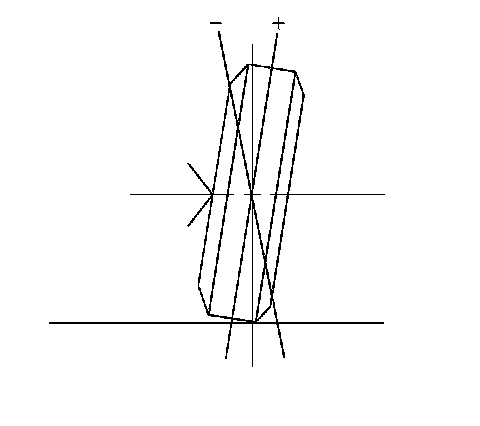

Camber Description
Camber Description
Camber Description:

Camber is the tilting of the wheels from the vertical when viewed from the front of the vehicle. When the wheels tilt outward at the top, the camber is positive (+). When the wheel tilts inward at the top, the camber is negative (-). The amount of tilt is measured in degrees from the vertical. Camber settings influence the directional control and the tire wear.
Too much positive camber will result in premature wear on the outside of the tire and cause excessive wear on the suspension parts.
Too much negative camber will result in premature wear on the inside of the tire and cause excessive wear on the suspension parts.
Unequal side-to-side camber of 1 degree or more will cause the vehicle to pull or lead to the side with the most positive camber.